Story Line
(8)
สำรวจ Pyramid
Elder Tree
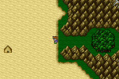
ก่อนถึงทะเลทรายจะเจอป่า
ซึ่งตอนนี้ Elder Tree กำลังฟื้นตัวอยู่
Quicksand Desert
เมื่อเข้าไปในทะเลทรายกลับพบว่า ทรายดูดสงบลงแล้ว
เพราะว่า Crystal ดินแตกไปแล้ว
Pyramid
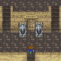
เมื่อเข้าไปจะเจอ Gargoyle เฝ้าอยู่
Boss
: Gargoyle (x2)
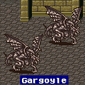
Level : 33
HP : 5,000
* Note : แม้ Gargoyle จะมี HP ที่ต่ำ แต่หากปราบมันได้เพียงตัวเดียว
มันจะฟื้นคืนชีพขึ้นมาอีกครั้ง เพราะฉะนั้นต้องปราบทีเดียวพร้อมๆ
กัน ทั้ง 2 ตัว
ภายใน Pyramid มี Learning Magic 1 เวทย์ คือ
Guard Off จาก Nile
ภายในจะเจอหีบศพ ซึ่งภายในจะมี Boss
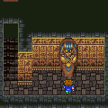
Boss : Grand Mummy
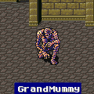
Level : ????
HP : 6,000
Weakness : Fire
จากนั้นเมื่อเข้าไปภายในสุดของ Pyramid ได้
จะพบกับแผ่นจารึกแผ่นแรก
แต่เมื่อหยิบแผ่นจารึก ตามคำทำนายในหนังสือแห่งผนึก
ผู้รับใช้พลังศักดิ์สิทธิ์จะถูกปลดปล่อย
ในเวลานั้น ณ แหลมที่เป็นรูปนก ได้ถล่ม
และสิ่งที่โผล่ขึ้นมาก็คือ Bahamut
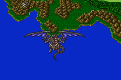
Bahamut ได้บินผ่าน Pyramid โดยได้ทิ้งข้อความไว้ว่า
จะรออยู่บนภูเขาทางทิศเหนือ
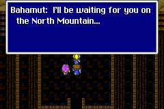
และในเวลาเดียวกันนั้น เรือเหาะ ที่เคยอยู่บนแหลม ได้ลอยมาติดอยู่ใกล้ๆ
ปราสาท Sugate
ดังนั้นจึงให้กลับไปยังเรือเหาะ ซึ่งต้องผ่านป่า ที่มี Elder Tree
อีกครั้ง
Elder Tree
เมื่อเข้าไปจะเจอ Hiryuu พา Lenna มาส่ง

แต่ Lenna กลับโดนพลังชั่วร้ายควบคุมอยู่ โดย Exdeath
อีกทั้ง Exdeath ยังใช้พลังดูดห้องสมุดเข้าไปใน "Cleft of Dimension"
ด้วย
และตอนนี้ Exdeath สามารถควบคุมปีศาจจากใน "Cleft of Dimension"
ได้แล้ว
Exdeath จึงได้ส่ง Merugene ให้ควบคุมร่าง Lenna มาทำร้ายพวก Butz
แต่ Hiryuu พุ่งเข้าชน Lenna จนทำให้ Merugene หลุดออกมาจากร่างของ
Lenna
Boss : Merugene
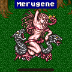
Level : 29
HP : 20,000
Weakness : Fire, Ice,
Lightning (อย่างใดอย่างหนึ่ง)
* Note : หากใช้การโจมตีทางกายภาพกับ Merugene จะสร้างความเสียหายได้น้อยมาก
ต้องใช้เวทย์มนต์ในการโจมตี โดย Merugene จะพ่ายแพ้เวทย์ใดเวทย์หนึ่งใน
3 เวทย์ คือ
Fire, Ice, Lightning ซึ่งจุดอ่อนของ Merugene จะเปลี่ยนแปลงไปเรื่อยๆ
แต่ในช่วงแรก Merugene จะพ่ายแพ้ไฟ
และ Merugene จะดูดซับเวทย์ที่ไม่ใช่จุดอ่อนของมันได้ด้วย ต้องระวังในการใช้เวทย์ให้ดี
อาจใช้วิธีการ Scan ดูก่อนว่าในขณะนั้น Merugene แพ้เวทย์อะไร
หรือใช้การเวทย์อื่นๆ ที่ไม่มีธาตุโจมตี เช่น Comet,
Blowfish เป็นต้น
เมื่อปราบได้จะได้ Lenna เข้าร่วมกลุ่มอีกครั้ง
ไปยังเรือเหาะที่อยู่ใกล้ๆ กับปราสาท Surgate
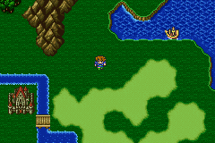
เมื่อขึ้นไปบนเรือเหาะ
Lenna จะบอกว่า ทางเข้า "Cleft of Dimension" อยู่ตำแหน่งที่ปราสาท
Tycoon ถูกดูดเข้าไป
แต่การจะเข้าไปใน "Cleft of Dimension" และต่อสู้กับ Exdeath
ได้นั้น
จำเป็นต้องมีอาวุธศักดิ์สิทธิ์เสียก่อน
จึงมุ่งหน้าไปยังปราสาท Kuza ที่เก็บอาวุธศักดิ์สิทธิ์เอาไว้
และในขณะเดียวกัน Exdeath ได้ใช้พลังจาก "Void" ทำลายโลก
โดยดูดปราสาทและเมือง Walz, หมู่บ้าน Istory, ป่า Moogle, หมู่บ้าน
Lix ...หายไป
เมื่อสามารถบังคับเรือเหาะได้แล้ว
จะมี Sude-Quest ให้ทำมากมาย เช่น
Side-Quest "Ride
Hiryuu"
Side-Quest "Power
Song"
Side-Quest "Ribbon"
Side-Quest "Syldra"
Side-Quest "Magic
Lamp"
Side-Quest "Brave
or Chicken"
Side-Quest "Big Guard"
Side-Quest "Town of Mirage"
Side-Quest "Odin"
Side-Quest "Phoenix"
Side-Quest "Bahamut"
* Note : Side-Quest "Odin, Phoenix, Bahamut"
ค่อยกลับมาทำก็ได้
แต่จุดมุ่งหมายหลักตอนนี้คือ การไปเอาอาวุธศักดิ์สิทธิ์จากปราสาท
Kuza
Sealed Castle Kuza
ภายในปราสาทจะมีนักวิชาการจาก Wind Shrine ย้ายมาอยู่
และได้นำไหฟื้นฟู HP/MP มาด้วย
ภายในปราสาท นอกจากจะมีศัตรูคือ Shield
Dragon แล้ว
ครั้งนี้ยังมี Exdeath Soul อีกด้วย
Exdeath Soul
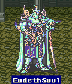
Level : 1
HP : 15,000
Weakness : Holy
เมื่อเข้าไปยังแท่นที่ตั้งแผ่นจารึก จะสามารถคลายผนึกที่ปิดอยู่ได้
3 ชิ้น
ให้เลือกอาวุธมา 3 ชิ้น จากทั้งหมด 12 ชิ้น
ในขณะเดียวกัน Exdeath ก็ได้ส่งลูกสมุนออกมา
เพื่อหยุดยั้งพวก Butz ไม่ให้คลายผนึกของอาวุธศักดิ์สิทธิ์ทั้ง 12
ชิ้น
เพราะหากมีพลังของอาวุธศักดิ์สิทธิ์ Exdeath อาจพ่ายแพ้ได้
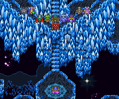
จุดมุ่งหมายต่อไป คือ เก็บแผ่นจารึกที่เหลือให้ครบ
Next
to Story 9